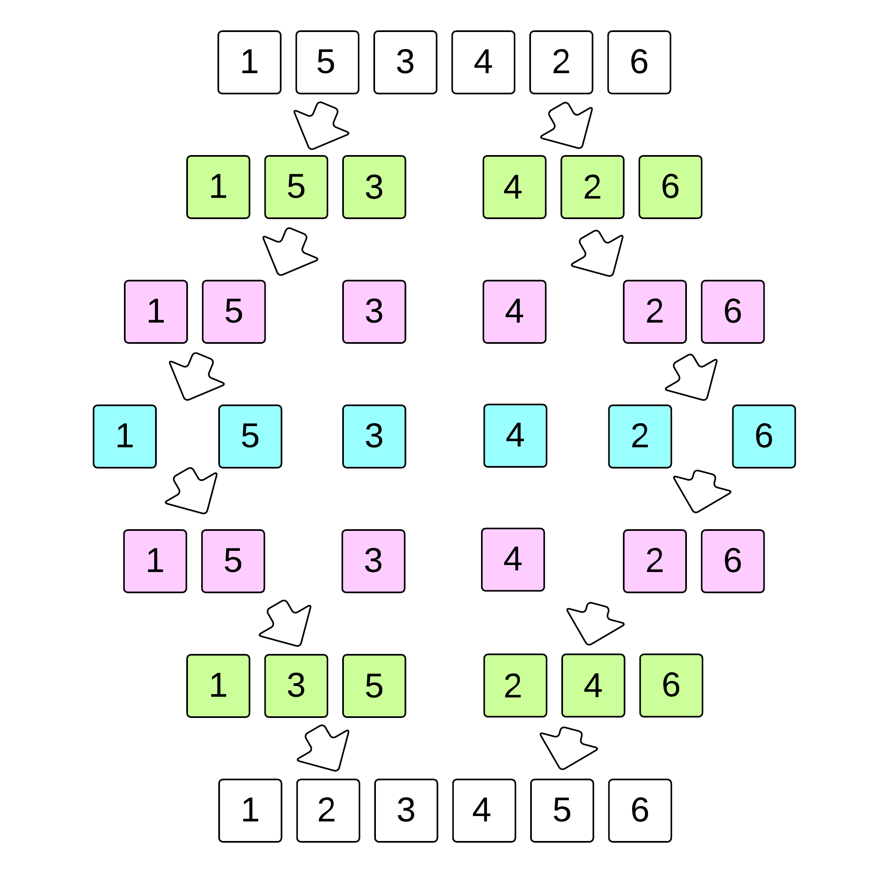

What is Merge Sort and how is it associated with Algorithms?
Merge Sort is a sorting algorithm, which is commonly used in computer science. Merge Sort is a divide and conquer algorithm. It works by recursively breaking down a problem into two or more sub-problems of the same or related type, until these become simple enough to be solved directly. The solutions to the sub-problems are then combined to give a solution to the original problem. So Merge Sort first divides the array into equal halves and then combines them in a sorted manner.
Merge Sort Algorithms: Steps on how it works:
- If it is only one element in the list it is already sorted, return.
- Divide the list recursively into two halves until it can no more be divided.
- Merge the smaller lists into new list in sorted order.
Below is an image of an array, which needs to be sorted. We will use Merge Sort Algorithm, to sort this array:

Important Characteristics of Merge Sort:
- Merge Sort is useful for sorting linked lists.
- Merge Sort is a stable sort which means that the same element in an array maintain their original positions with respect to each other.
- Overall time complexity of Merge sort is O(nLogn). It is more efficient as it is in worst case also the runtime is O(nlogn)
- The space complexity of Merge sort is O(n). This means that this algorithm takes a lot of space and may slower down operations for the last data sets.
ALGORITHM
MergeSort(A, p, r)
If p > r
return;
q = (p+r)/2;
mergeSort(A, p, q)
mergeSort(A, q+1, r)
merge(A, p, q, r)
Program to implement merge sort
#include<stdio.h>
#include<stdlib.h>
// Merges two subarrays of arr[].
// First subarray is arr[l..m]
// Second subarray is arr[m+1..r]
void merge(int arr[], int l, int m, int r)
{
int i, j, k;
int n1 = m - l + 1;
int n2 = r - m;
/* create temp arrays */
int L[n1], R[n2];
/* Copy data to temp arrays L[] and R[] */
for (i = 0; i < n1; i++)
L[i] = arr[l + i];
for (j = 0; j < n2; j++)
R[j] = arr[m + 1+ j];
/* Merge the temp arrays back into arr[l..r]*/
i = 0; // Initial index of first subarray
j = 0; // Initial index of second subarray
k = l; // Initial index of merged subarray
while (i < n1 && j < n2)
{
if (L[i] <= R[j])
{
arr[k] = L[i];
i++;
}
else
{
arr[k] = R[j];
j++;
}
k++;
}
/* Copy the remaining elements of L[], if there
are any */
while (i < n1)
{
arr[k] = L[i];
i++;
k++;
}
/* Copy the remaining elements of R[], if there
are any */
while (j < n2)
{
arr[k] = R[j];
j++;
k++;
}
}
/* l is for left index and r is right index of the
sub-array of arr to be sorted */
void mergeSort(int arr[], int l, int r)
{
if (l < r)
{
// Same as (l+r)/2, but avoids overflow for
// large l and h
int m = l+(r-l)/2;
// Sort first and second halves
mergeSort(arr, l, m);
mergeSort(arr, m+1, r);
merge(arr, l, m, r);
}
}
Best = O(n * logn)
Average = O(n * logn)
Worst = O(n * logn)